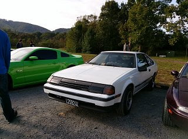
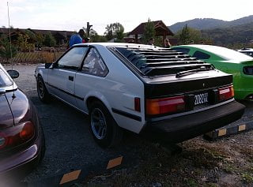
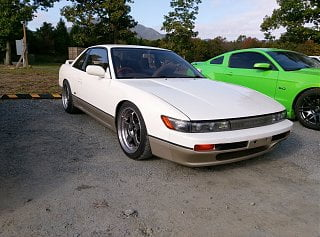
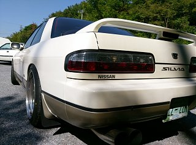
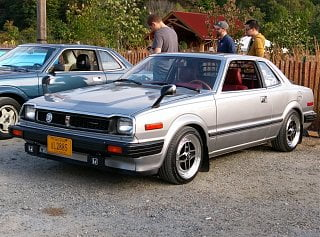
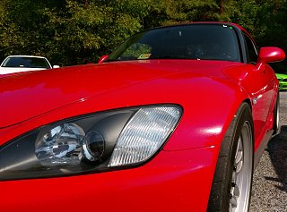
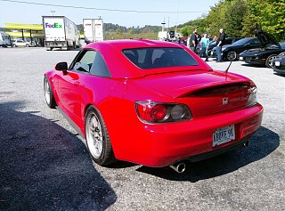
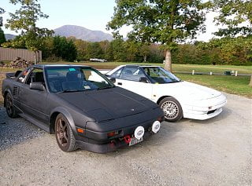
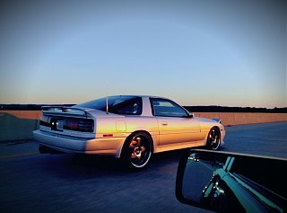
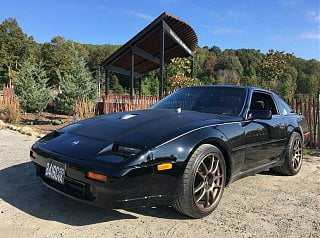

-
Got to test my meddle in the mountains today, of course i was leading 4 Miatas 2 MR2's, an EM2 and an S13 CA18DET Silvia that were digging out my ass in the tight stuff- did good in the sweeps and chicanes, but they were definitely faster in the hair vs my setup. No major incidents besides a junky accord that showed up rear ended a pristine RHD AW11. Didn't get as many pics as i should have. 400rwTQ at 3K/rpm really makes climbing fun!
Great turn out over 40 cars, various makes, and good un biased mature people.
here are some highlights.    -
That lime 5.0 was absolutely sick, owner focused on suspesnsion and Boss swapped it
Old prelude (silver) was lightly done, but a show stopper, the blue one behind it was B18 swapped and more of a ratrod still very well done.
hardtop S2K was fitted and dropped on RPF's perfect car for mountain runs  Last edited by 88sinZ; 10-15-2016, 10:02 PM. -
USDM AW11 (matte) and JDM RHD AW11 (white) both turbo
1JZ MkIII cruising back home, not pictured the WS6 that also rolled back with us. Loved cruising back with an era rival and super clean car, ran em both and the Z took the cake.
F'n money shot  Last edited by 88sinZ; 10-15-2016, 10:09 PM. -
some more here: https://www.instagram.com/japaneseclassicsofvirginia/
black miata was supercharged, could not lose him for the life of me… until we got to sweepsLast edited by 88sinZ; 10-15-2016, 10:05 PM. -
There's such a vast array of vehicles. From vowing those pics, that show had a great showing. Thanks for sharing.Originally posted by Racinjitter

Copyright © 2006–. All rights reserved. Privacy Policy